Every player gets a different public question or task from the round's topic. The Mole lies about their own assigned prompt.
Official media resources
Truth or Mole
press kit.
Publication-ready facts, copy, key art, logos, and real gameplay captures for journalists, creators, partners, and platform editors.
Revision 2026-08 · 38 MB ZIP · Android release

Primary key artTitle embedded · 1920 × 1080 · publication-ready
The game at a glance
Overview
The hook
Each round chooses one topic, then every player gets a different public prompt. Most answer truthfully. One hidden Mole must make up a convincing lie to their own prompt — then survive the room.
One sentence
Truth or Mole is a one-phone party game where every player gets a different public prompt from one topic, but one hidden player must lie convincingly and survive the group vote.
Short description
Pass one phone around 3–16 players. Each round picks one topic and gives every player a different public prompt. Honest players answer truthfully; the hidden Mole invents a plausible lie. Discuss the answers, accuse a suspect, and vote — catch the Mole before the group runs out of chances.
Long description
Truth or Mole turns one Android device into a social deduction game for the whole room. Each round selects one topic, then every player answers a different public question or task from it. Most must tell the truth; the hidden Mole must bluff about their own prompt without sounding different. Once every answer is in, the group compares stories, reads reactions, and votes for the player they trust least.
Fast setup, flexible groups of 3–16, themed question packs, Action Twists, Blitz rounds, and an optional two-Mole mode make it easy to tune a session for friends, dates, families, trips, and game nights. No room codes or individual player accounts are required.
Studio boilerplate
Little Brush Games is an independent studio creating playful, social-first games designed to bring people together. Its first release, Truth or Mole, is a local one-phone party game of truthful answers, convincing lies, and suspicious votes for 3–16 players. Made in Hamburg.
Why it is different
Key features
Local pass-and-play for 3–16 people with no room codes and no separate player devices.
16 themed packs with 1,839 questions, plus Action Twists, Blitz rounds, and a two-Mole option.
Full English, German, and Russian localizations for the app and its current store presence.
Rule accuracy: every player gets a different public prompt from the round's topic. The Mole lies about their own assigned prompt; no one gets a fake, missing, hidden, or replacement question.
Every crop stays identifiable
Key art
Each primary marketing crop includes the full game title inside the asset. A clean, unlettered background is provided only as a secondary compositing source.
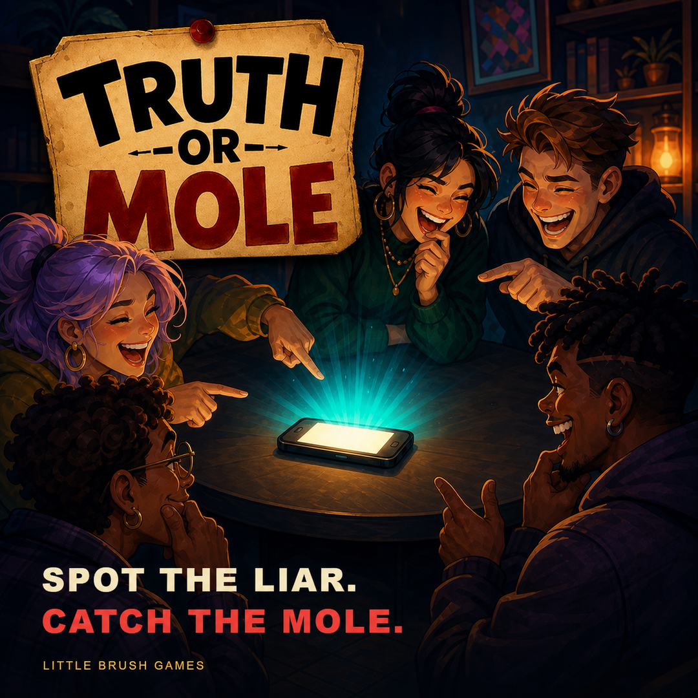
{kind=link}
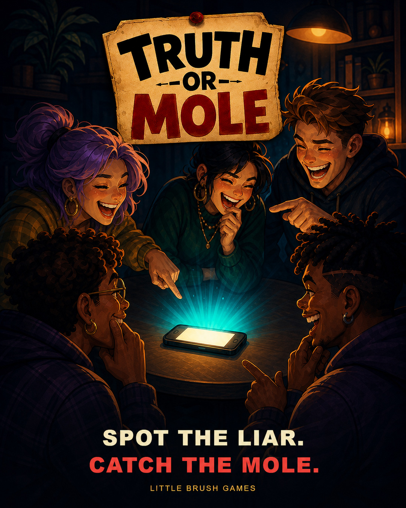
{kind=link}
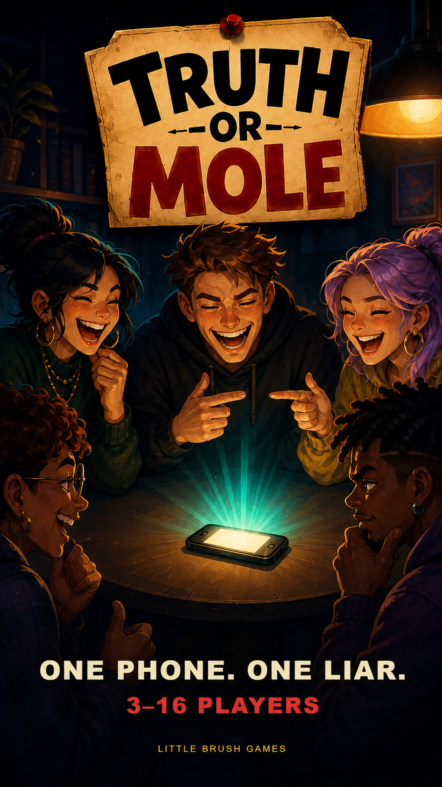
{kind=link}
Need a custom crop?Download the clean illustrated background (PNG) ↓
{kind=link}
Logos and store artwork
Brand assets
English horizontal product lockup
2000 × 900 transparent PNG · app icon plus English title artwork
Download PNG ↓{kind=link}
English game title badge
1600 × 1236 transparent PNG · clean isolated paper title treatment
Download PNG ↓{kind=link}
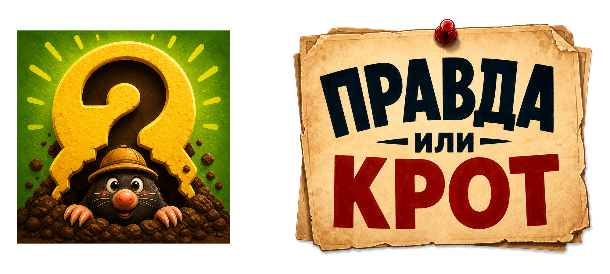
Russian horizontal product lockup
2000 × 900 transparent PNG · app icon plus Russian title artwork
Download PNG ↓{kind=link}
Russian game title badge
1600 × 1288 transparent PNG · clean isolated Russian title treatment
Download PNG ↓{kind=link}
{kind=link}
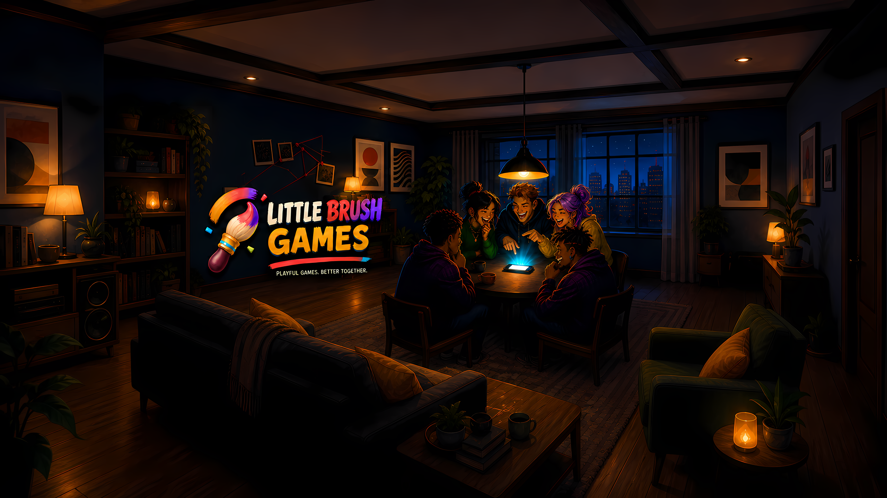
Little Brush Games studio key art
2560 × 1440 PNG · studio-level coverage, profiles, and editorial use
Download PNG ↓{kind=link}
Little Brush Games studio avatar
1024 × 1024 PNG · provisional operational studio identity
Download PNG ↓{kind=link}
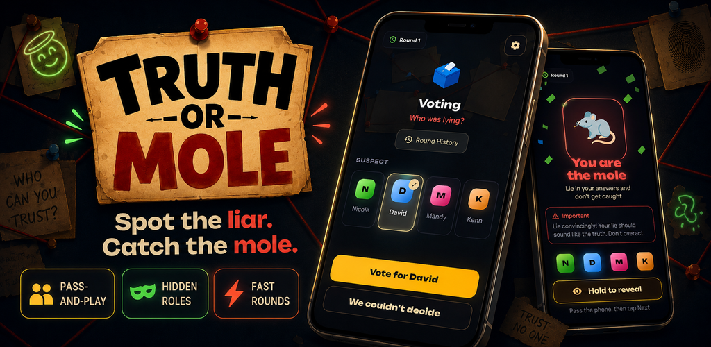
{kind=link}
Real app pixels
Gameplay screenshots
These are current English store frames built from real app captures. The full download contains all eight 1080 × 1920 phone images and all eight 2560 × 1440 tablet images in original PNG quality.
Download all 16 screenshots{kind=link}
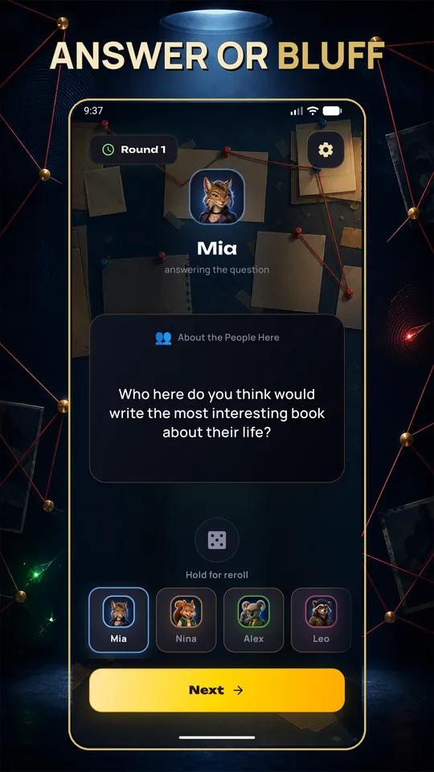
01 · Answer or bluff{kind=link}
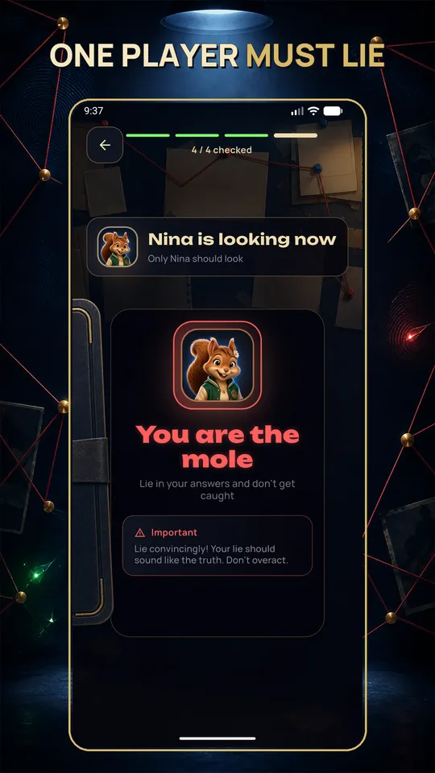
02 · One player must lie{kind=link}
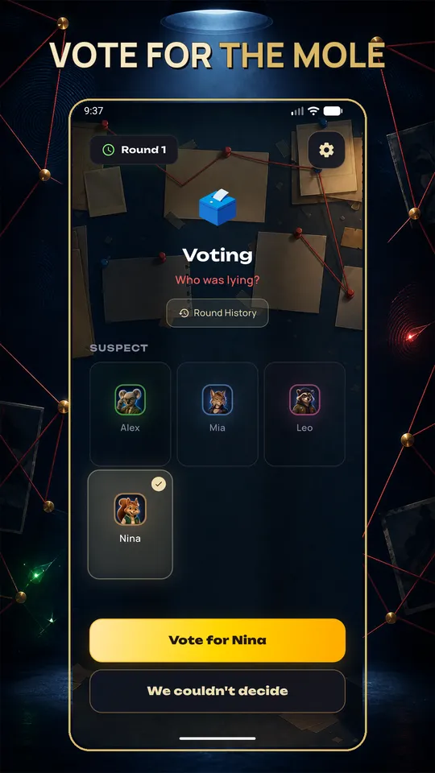
03 · Vote for the Mole{kind=link}
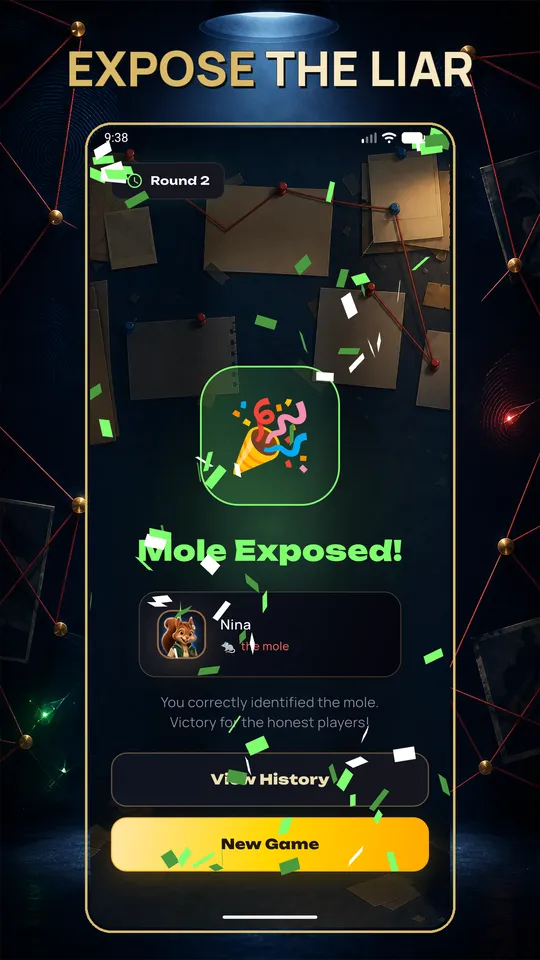
04 · Expose the liar{kind=link}
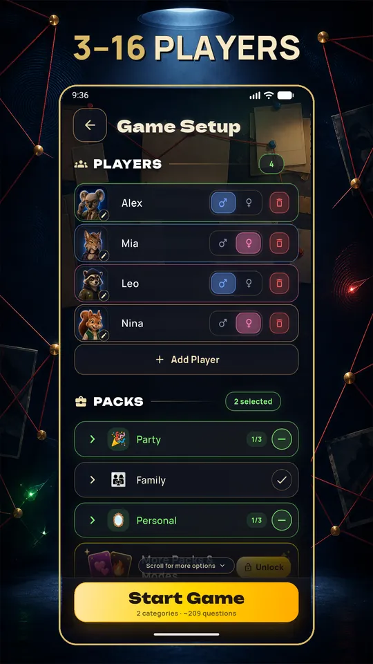
05 · Set up 3–16 players{kind=link}
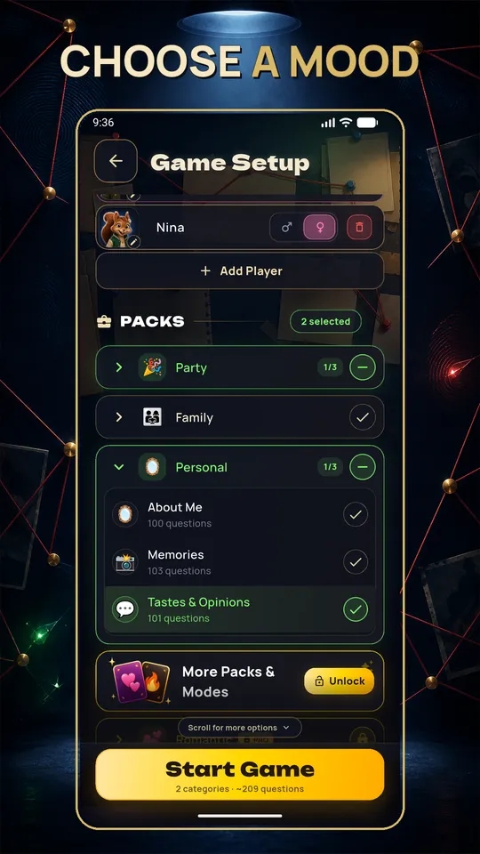
06 · Choose a mood{kind=link}
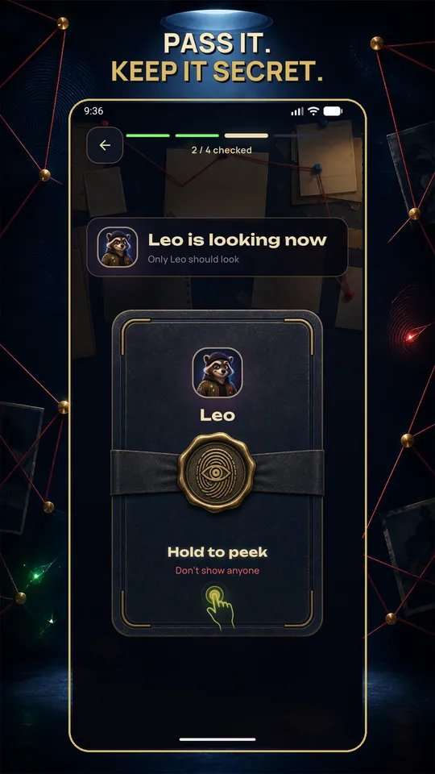
07 · Pass it secretly{kind=link}
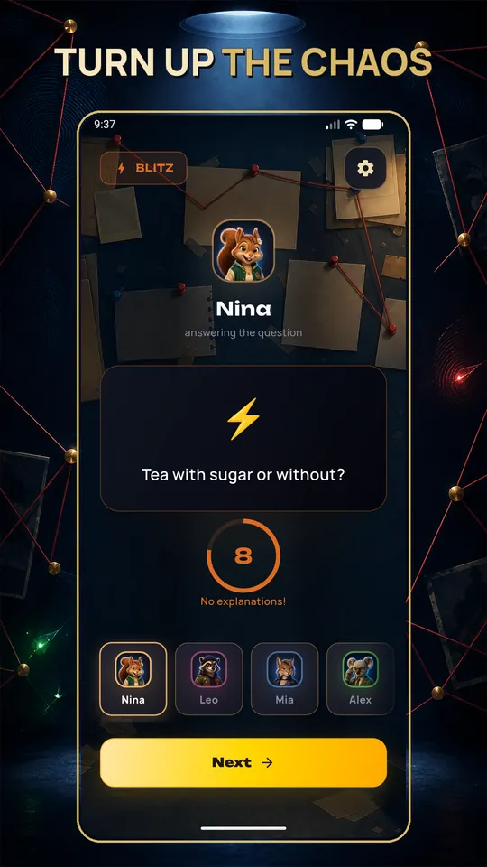
08 · Turn up the chaosSelect any screenshot to download its original phone PNG. Tablet originals are included in the screenshot ZIP and the complete press kit.
Practical guardrails
Media usage
You may
- Use the supplied assets in editorial coverage, reviews, creator videos, streams, and platform features.
- Crop key art to fit a layout while keeping the title readable.
- Use the clean background with the canonical title badge or horizontal product lockup.
- Record and edit your own gameplay footage.
Please do not
- Distort, recolor, or rewrite the game or studio logos.
- Present illustrated key art as an in-game screenshot.
- Generate or reconstruct fake app UI and label it as gameplay.
- Imply Little Brush Games endorses a claim, product, or sponsor.
For paid advertising, merchandise, licensing, or another commercial use beyond coverage and creator content, contact hello@littlebrushgames.com.
Links and contact
Where to send people
- Product pagelittlebrushgames.com/truth-or-mole
- Google Playtracked official link
- Press, creators, partnershipshello@littlebrushgames.com
- Player supportsupport@littlebrushgames.com
Everything in one place
Need the complete package?
Key art, title treatments, studio assets, 16 original screenshots, store artwork, and usage notes.